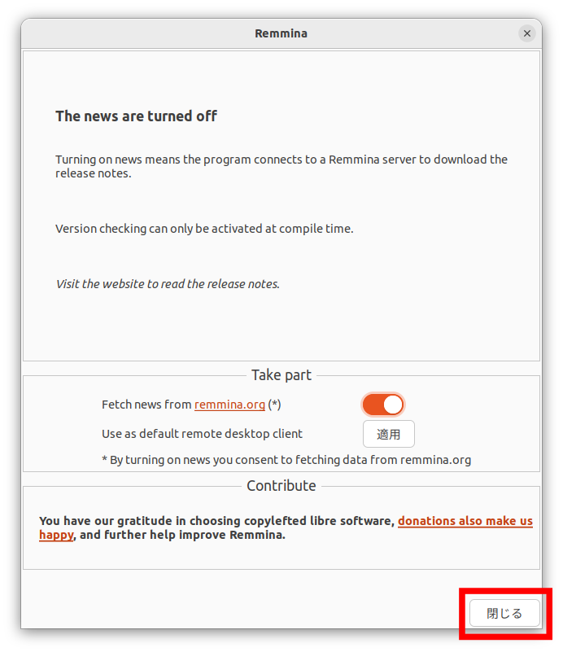
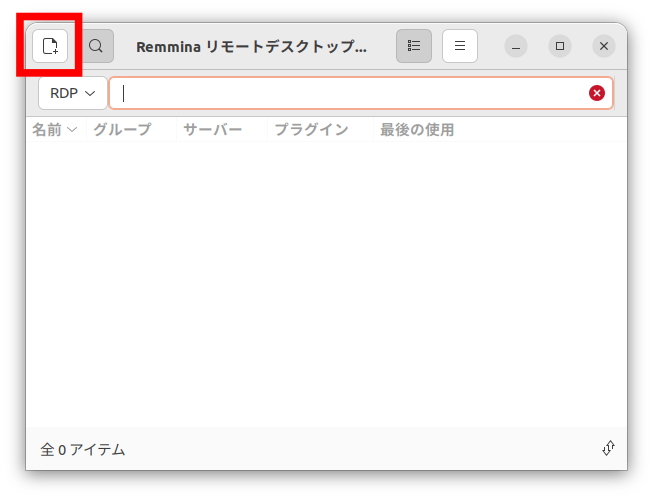
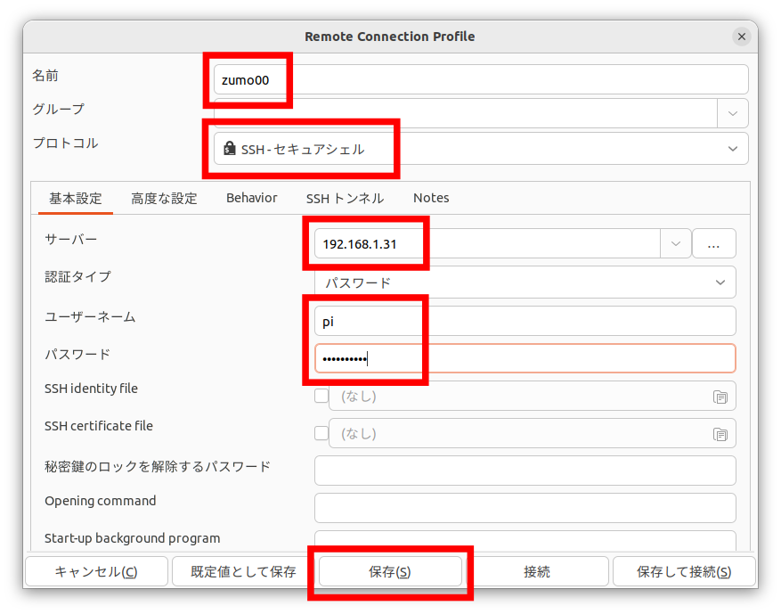
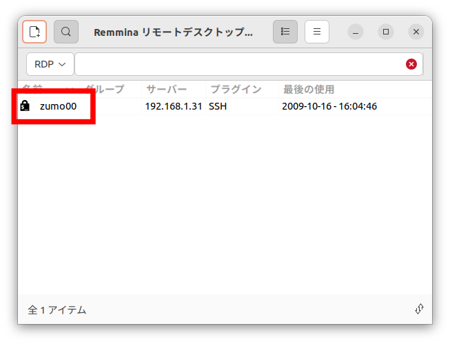

Linuxのインストール（Raspberry Pi）#
Linuxはオープンソースのオペレーティングシステム（OS）です。
Raspberry PiではUbuntu Server 22.04 LTSを使います。
Raspberry Pi Imagerのインストール#
公式のディスクイメージ書き込みツールRaspberry Pi Imagerを使ってSDカードにディスクイメージを書き込みます。
詳しくは、 Raspberry Pi OSのHP を参照してください。
以下のコマンドを実行してRaspberry Pi Imagerをインストールします。
$ sudo apt install rpi-imager
ディスクイメージの書き込み#
Raspberry Pi Imagerを起動します。
［OSを選ぶ］ボタンをクリック。

［Other general purpose OS］を選択。
［Ubuntu］を選択。
［Ubuntu Server 22.04.2 LTS (64bit)］を選択。
SDカードを挿入して、 ［ストレージを選ぶ］ボタンをクリック。
挿入したSDカードを選択。
［書き込む］ボタンをクリック。
［はい］ボタンをクリック。

書き込み中。
［続ける］ボタンをクリック。
Raspberry Pi Imagerを閉じ、SDカードをUnmountして取り出してください。
Raspberry Piの設定#
Raspberry Piにモニター、キーボード、LANケーブルを接続してください。
SDカードを挿入して電源を入れます。
しばらくすると次のような場面が表示されます。
ユーザー名はubuntu、パスワードはubuntu。
パスワードを変更するよう要求されるので、hirate2020と設定。
※パスワードは表示されません
Ubuntu 22.04.2 LTS ubuntu tty1
ubuntu login: ubuntu
Password: ubuntu
You are required to change your password immediately (administrator enforced).
Changing password for ubuntu.
Current password: ubuntu
New password: hirate2020
Retype new password: hirate2020
Welcome to Ubuntu 22.04.2 LTS (GNU/Linux 5.15.0-1024-raspi aarch64)
・・・
ubuntu@ubuntu:~$
ホスト名の変更#
現在の設定値を確認。
ubuntu@ubuntu:~$ hostnamectl
Static hostname: ubuntu
Icon name: computer
Machine ID: d0ca8890dd784e2fbb6f2df7d0d6a578
Boot ID: 734a0a895248435ca9c3250b5ed88031
Operating System: Ubuntu 22.04.2 LTS
Kernel: Linux 5.15.0-1024-raspi
Architecture: arm64
ホスト名をubuntuからzumo00に変更します。番号は、各自が使っているZumoの番号です。
ubuntu@ubuntu:~$ hostnamectl set-hostname zumo00
==== AUTHENTICATING FOR org.freedesktop.hostname1.set-static-hostname ===
Authentication is required to set the statically configured local host name, as well as the pretty host name.
Authenticating as: Ubuntu (ubuntu)
Password:
==== AUTHENTICATION COMPLETE ===
ホスト名が変更できているか確認。
ubuntu@ubuntu:~$ hostnamectl
Static hostname: zumo00
Icon name: computer
Machine ID: d0ca8890dd784e2fbb6f2df7d0d6a578
Boot ID: 734a0a895248435ca9c3250b5ed88031
Operating System: Ubuntu 22.04.2 LTS
Kernel: Linux 5.15.0-1024-raspi
Architecture: arm64
再起動。
ubuntu@ubuntu:~$ sudo shutdown -r now
ホスト名が変更されていることを確認してください。
ubuntu@zumo00:~$
ユーザーの追加#
piというユーザーを追加。
ubuntu@zumo00:~$ sudo adduser pi
Adding user `pi' ...
Adding new group `pi' (1001) ...
Adding new user `pi' (1001) with group `pi' ...
Creating home directory `/home/pi' ...
Copying files from `/etc/skel' ...
New password: hirate2020
Retype new password: hirate2020
passwd: password updated successfully
Changing the user information for pi
Enter the new value, or press ENTER for the default
Full Name []: press [Enter]key
Room Number []: press [Enter]key
Work Phone []: press [Enter]key
Home Phone []: press [Enter]key
Other []: press [Enter]key
Is the information correct? [Y/n] y
piをsudoグループに追加。
ubuntu@zumo00:~$ sudo adduser pi sudo
Adding user `pi' to group `sudo' ...
Adding user pi to group sudo
Done.
ubuntuとrootをロック。
ubuntu@zumo00:~$ sudo passwd -d ubuntu
passwd: password expiry information changed.
ubuntu@zumo00:~$ sudo passwd -l ubuntu
passwd: password expiry information changed.
ubuntu@zumo00:~$ sudo passwd -l root
passwd: password expiry information changed.
この段階で、ログインできるユーザーはpiのみとなります。
一度ログアウト。
ubuntu@zumo00:~$ exit
piでログイン。
Ubuntu 22.04.2 LTS ubuntu tty1
ubuntu login: pi
Password: hirate2020
ユーザーが変更されていることを確認してください。
pi@zumo00:~$
ssh接続#
PCからRaspberry Piを遠隔操作するためにssh接続をします。
今回は、Ubuntuに標準でインストールされているRemminaを使います。
はじめに、Raspberry PiのIPアドレスを調べます。
pi@zumo00:~$ ip a
1: lo: mtu 65536 qdisc noqueue state UNKNOWN group default qlen 1000
link/loopback 00:00:00:00:00:00 brd 00:00:00:00:00:00
inet 127.0.0.1/8 scope host lo
valid_lft forever preferred_lft forever
inet6 ::1/128 scope host
valid_lft forever preferred_lft forever
2: eth0: mtu 1500 qdisc fq_codel state UP group default qlen 1000
link/ether b8:27:eb:71:91:bf brd ff:ff:ff:ff:ff:ff
inet 192.168.1.31/24 brd 192.168.1.255 scope global dynamic eth0
valid_lft 258007sec preferred_lft 258007sec
inet6 fe80::ba27:ebff:fe71:91bf/64 scope link
valid_lft forever preferred_lft forever
3: wlan0: mtu 1500 qdisc noop state DOWN group default qlen 1000
link/ether b8:27:eb:24:c4:ea brd ff:ff:ff:ff:ff:ff
Remminaを起動します。
次のウィンドウが出てきたら、［閉じる］ボタンをクリック。
［New connection profile］ボタンをクリック。
「リモートデスクトップの設定」ウィンドウが立ち上がります。
必要な情報を入力して、［保存］ボタンをクリック。
zumo00という名前の接続が追加されました。
zumo00をダブルクリックするとラズベリーパイと接続されます。
zumo00と接続されました。
以降、Raspberry Piの操作はこの画面から行います。
無線LANの設定#
現在のネットワークの設定を確認します。
pi@zumo00:~$ cat /etc/netplan/50-cloud-init.yaml
# This file is generated from information provided by the datasource. Changes
# to it will not persist across an instance reboot. To disable cloud-inits
# network configuration capabilities, write a file
# /etc/cloud/cloud.cfg.d/99-disable-network-config.cfg with the following:
# network: {config: disabled}
network:
ethernets:
eth0:
dhcp4: true
optional: true
version: 2
現在の設定ファイルをコピーして、新しい設定ファイルを作ります。
pi@zumo00:~$ sudo cp /etc/netplan/50-cloud-init.yaml /etc/netplan/99_config.yaml
[sudo] password for pi:
新しい設定ファイルを編集します。
$ sudo nano /etc/netplan/99_config.yaml
IPアドレスには、自分が使っているZumoに割り振られたIPアドレスを入力してください。
# This file is generated from information provided by the datasource. Changes
# to it will not persist across an instance reboot. To disable cloud-inits
# network configuration capabilities, write a file
# /etc/cloud/cloud.cfg.d/99-disable-network-config.cfg with the following:
# network: {config: disabled}
network:
ethernets:
eth0:
dhcp4: true
optional: true
wifis:
wlan0:
dhcp4: false
optional: true
addresses: [192.168.1.250/24]
routes:
- to: default
via: 192.168.1.1
nameservers:
addresses: [192.168.1.1]
search: []
access-points:
htc-s-ap:
password: "E4LEHeJnS7"
version: 2
設定を反映させます。
$ sudo netplan apply
Raspberry Piを終了します。（Remminaのssh接続は切断されます）
$ sudo shutdown -h now
wifiでネットワークに接続されているか確認します。 LANケーブルを抜いてからRaspberry Piの電源を入れてください。
IPアドレスを確認します。
pi@zumo00:~$ ip a
1: lo: mtu 65536 qdisc noqueue state UNKNOWN group default qlen 1000
link/loopback 00:00:00:00:00:00 brd 00:00:00:00:00:00
inet 127.0.0.1/8 scope host lo
valid_lft forever preferred_lft forever
inet6 ::1/128 scope host
valid_lft forever preferred_lft forever
2: eth0: mtu 1500 qdisc fq_codel state DOWN group default qlen 1000
link/ether b8:27:eb:71:91:bf brd ff:ff:ff:ff:ff:ff
3: wlan0: mtu 1500 qdisc fq_codel state UP group default qlen 1000
link/ether b8:27:eb:24:c4:ea brd ff:ff:ff:ff:ff:ff
inet 192.168.1.250/24 brd 192.168.1.255 scope global wlan0
valid_lft forever preferred_lft forever
inet6 fe80::ba27:ebff:fe24:c4ea/64 scope link
valid_lft forever preferred_lft forever
次のコマンドを実行して、インターネットとつながっているか確認してください。
pi@zumo00:~$ ping youtube.com
PING youtube.com (172.217.27.78) 56(84) bytes of data.
64 bytes from nrt12s15-in-f14.1e100.net (172.217.27.78): icmp_seq=1 ttl=113 time=61.6 ms
64 bytes from nrt12s15-in-f14.1e100.net (172.217.27.78): icmp_seq=2 ttl=113 time=20.7 ms
64 bytes from nrt12s15-in-f14.1e100.net (172.217.27.78): icmp_seq=3 ttl=113 time=19.2 ms
・・・
Remminaでwifi用の接続も作成しておきましょう。 名前はzumo00-wifiとします。